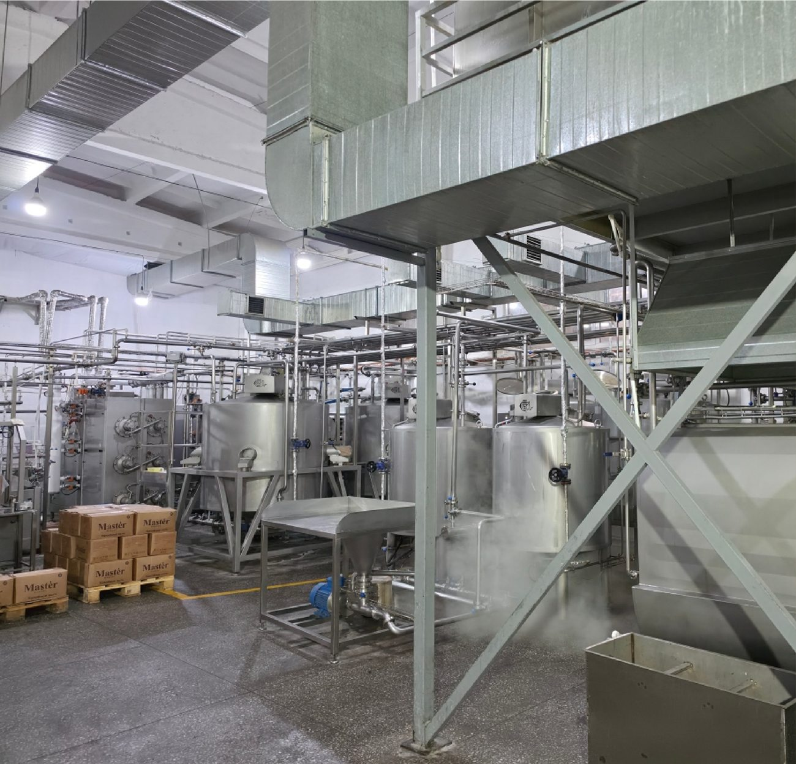
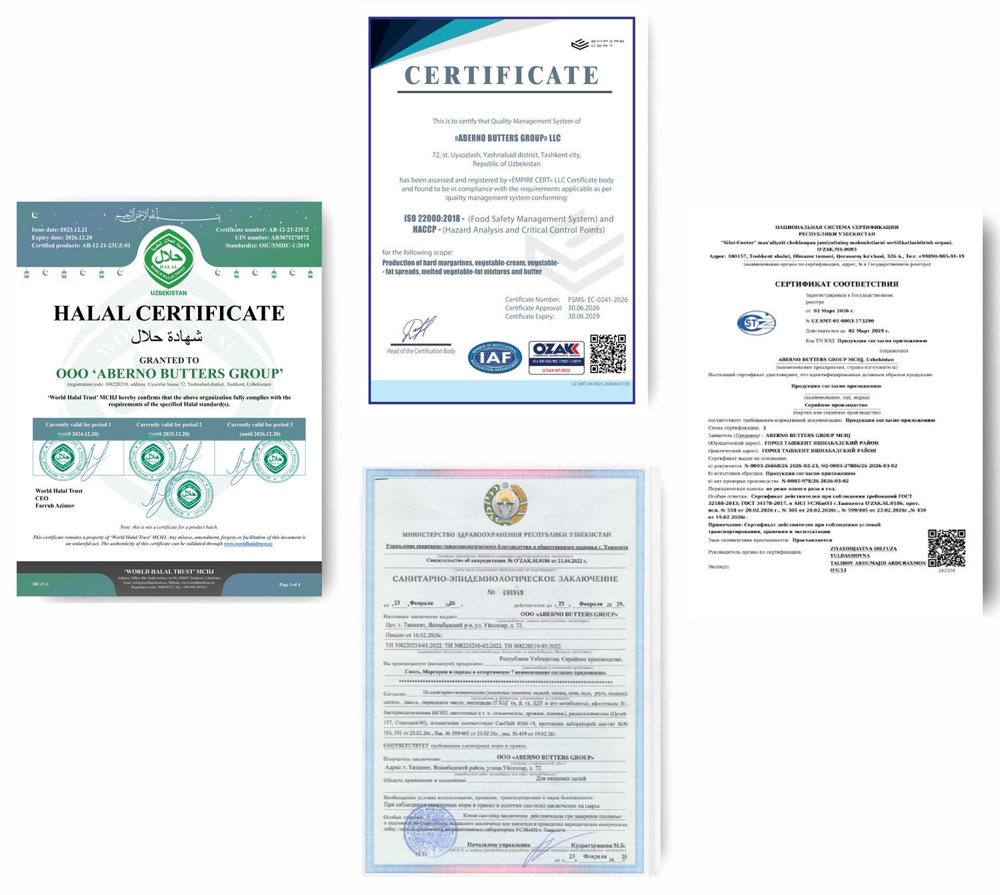

Ishlab chiqarish
Sifat — jarayon
Xomashyodan tortib qadoqlashgacha boʻlgan har bir bosqich qatʼiy nazoratdan oʻtadi.
Ikki yoʻnalish — bitta nazorat tizimi
Oziq-ovqat (margarin va spred) hamda sellyuloza-qogʻoz mahsulotlari alohida liniyalarda, lekin yagona sifat talablari asosida ishlab chiqariladi.
Har bir mahsulot bitta oddiy savol bilan baholanadi: uni oʻz oilamizga olib borishga tayyormizmi? Javob «ha» boʻlmaguncha mahsulot omborga chiqmaydi.
1000 t
Margarin va spred — oylik ishlab chiqarish quvvati (2000 kg/soat)
520 t
Haqiqiy oylik ishlab chiqarish hajmi (1300 kg/soat)
2021
Yogʻ-moy mahsulotlari ishlab chiqarish boshlangan yil
30
Tagacha mahsulot turi yogʻ-moy portfelida

Zavod
Zamonaviy liniyalar
Xomashyo va tayyor mahsulot namunalari muntazam tahlil qilinadi. Xalqaro standartlarga mos uskunalar barqaror sifatni taʼminlaydi, ishlab chiqarish va qadoqlash esa sanitariya talablariga toʻliq mos.
Jarayon
Mahsulot yoʻli
Xomashyo zavodga kirganidan to mahsulot savdo peshtaxtasiga chiqqunicha.
Xomashyo qabuli
Yetkazib beruvchilardan kelgan xomashyo kiruvchi nazoratdan oʻtadi.
Laboratoriya tahlili
Sifat va xavfsizlik koʻrsatkichlari tekshiriladi.
Ishlab chiqarish
Texnologik rejimlar zamonaviy liniyalarda nazorat qilinadi.
Qadoqlash
Gigiyenik sharoitda qadoqlash va markalash.
Saqlash va yetkazish
Talab etilgan sharoitda saqlanadi va mijozga yetkaziladi.
Sertifikatlar
Tasdiqlangan sifat
Halol sertifikati, ISO 22000:2018 va HACCP (oziq-ovqat xavfsizligi tizimi), muvofiqlik sertifikati hamda sanitariya-epidemiologiya xulosasi.

Zavodimizga tashrif